Com fer servir el programa de Windows i l'app del mòbil: importar els teus extractes, entendre cada pantalla i cada xifra, i mantenir les teves dades a salvo.
Versió 0.6.1 del programaNovembre de 2026dasuarezang.github.io/kreix-web
Contingut
Índex
1Què és Kreix i com es fa servir3
2Instal·lar i primera arrencada4
3Importar els teus extractes6
4Recorregut pel programa9
5Els teus moviments, pressupostos i metes14
6Entendre les xifres16
7Seguretat i còpies17
8Portar les teves dades d'un lloc a un altre19
9Kreix al mòbil20
10Dreceres i petits trucs24
11Problemes habituals25
12Glossari26
Com llegir aquesta guia. Si és la primera vegada, llegeix els capítols 1 a 3 i torna quan vulguis a la resta. Totes les captures fan servir dades de demostració inventades: cap xifra és real.
1
Què és Kreix i com es fa servir
Kreix és un programa de finances personals. Llegeix els extractes que tu descarregues del teu banc i t'ensenya, en un sol lloc, quant tens, quant gastes, quant estalvies i com va la teva inversió. Existeix en dues formes que comparteixen la mateixa lògica i el mateix format de dades:
Programa de Windows
El programa principal, per a Windows 10 i 11. És on s'importen els extractes, s'organitza tot i es fan les còpies de seguretat.
App del mòbil
La mateixa app adaptada al mòbil (Android i iPhone). S'instal·la des del navegador, sense botiga d'apps, i funciona sense connexió. Les dades se li passen des de l'ordinador amb un codi QR.
Quatre idees que convé tenir clares
Kreix no es connecta al teu banc. Mai et demana claus ni accessos. Treballa amb arxius CSV o Excel que descarregues tu des del web o l'app del teu banc.
Tot es queda al teu equip. No hi ha comptes, servidors ni telemetria. Les dades es desen xifrades amb una contrasenya mestra que només tu coneixes.
Pots reimportar sense por. Si importes dues vegades el mateix extracte, o dos que se solapen, només s'afegeix el que és nou.
Gairebé tot es desfà. Després de cada canvi important apareix un avís amb un botó Desfer.
Què necessites per començar
Un equip amb Windows 10 o 11 (64 bits), per al programa. El mòbil és opcional.
Els extractes del teu banc en CSV o Excel (no s'importen PDF). Els bancs reconeguts de sèrie són al capítol 3; per a qualsevol altre, Kreix t'ajuda a indicar quina columna és cada cosa.
Uns minuts per triar una contrasenya mestra que no oblidis: si la perds, ningú no pot recuperar les dades.
Kreix
2
Instal·lar i primera arrencada
Instal·lar el programa
Descarrega l'instal·lador (Kreix-Setup-0.6.1.exe) des del web i obre'l.
L'instal·lador no demana permisos d'administrador: instal·la Kreix a la teva carpeta d'usuari i crea una drecera al menú Inici i, si vols, a l'escriptori. Pots triar l'idioma de l'instal·lador (castellà, català o anglès).
Com que l'instal·lador encara no està signat, Windows pot avisar-te la primera vegada. Prem Més informació i després Executa de totes maneres.
En desinstal·lar no s'esborren les teves dades: continuen a %APPDATA%\Kreix fins que tu les eliminis.
La contrasenya mestra
La primera vegada que obres Kreix et demana crear una contrasenya mestra (mínim 8 caràcters). A sota, un mesurador de quatre franges, que s'omplen i passen de vermell a groc i a verd, i una frase et diuen com de difícil seria endevinar-la i com millorar-la. És un avís, no una regla: l'únic mínim són 8 caràcters.
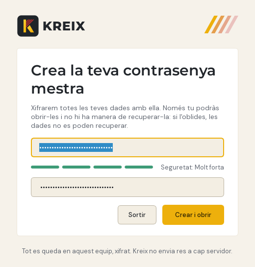
Crear la contrasenya mestra, amb el mesurador de fortalesa.
Apunta-la en un lloc segur. Kreix xifra les teves dades amb ella i no existeix cap clau de recanvi. Si l'oblides, l'única sortida és començar de zero.
La benvinguda
Després, un quadre et fa tres preguntes ràpides. Tot es pot canviar després a Configuració:
Idioma. Castellà, català o anglès. Es proposa el del sistema.
El teu nom. Perquè Inici et saludi segons l'hora. És opcional.
Què vols gestionar. Els teus comptes bancaris, les teves inversions o totes dues coses (sempre en queda almenys una). Inici s'adapta al que triïs.
La primera pantalla
Amb Kreix encara buit, Inici explica en tres passos què descarregar i on deixar-ho anar, i ofereix Provar amb dades d'exemple: dades inventades, amb un avís a dalt i un botó Començar amb les meves dades. Es treuen soles en el moment que importes extractes reals, així que mai no es barregen amb les teves.
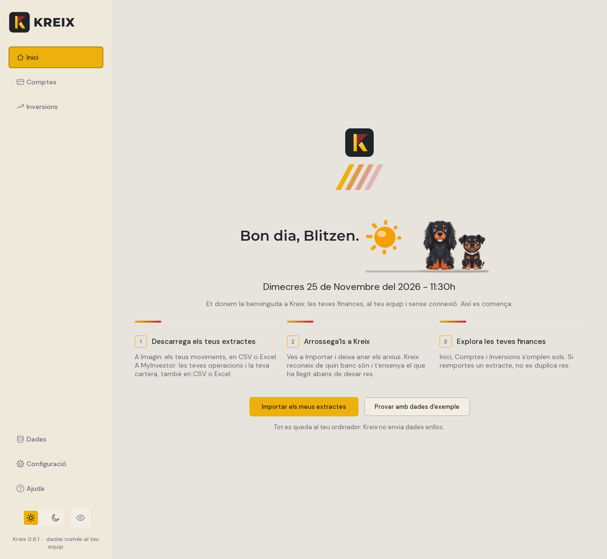
Inici amb Kreix buit: tres passos per començar.
3
Importar els teus extractes
Tot comença a Dades > Importar. Descarrega l'extracte del teu banc en CSV o Excel, arrossega'l a la finestra (o prem Seleccionar arxius) i tria el compte al qual pertany.
Deixa anar l'arxiu. Kreix detecta el banc i el tipus d'arxiu per les capçaleres, no pel nom ni per l'extensió. Funcionen arxius sense extensió o amb .csv.txt.
Revisa el que ha llegit. Apareix una targeta per arxiu amb el seu tipus, el nombre de files, les dates, quants moviments són nous i quants ja hi eren. Encara no s'ha desat res.
Prem Importar. Es desen només els moviments nous i un avís et deixa Desfer si alguna cosa no és el que esperaves.
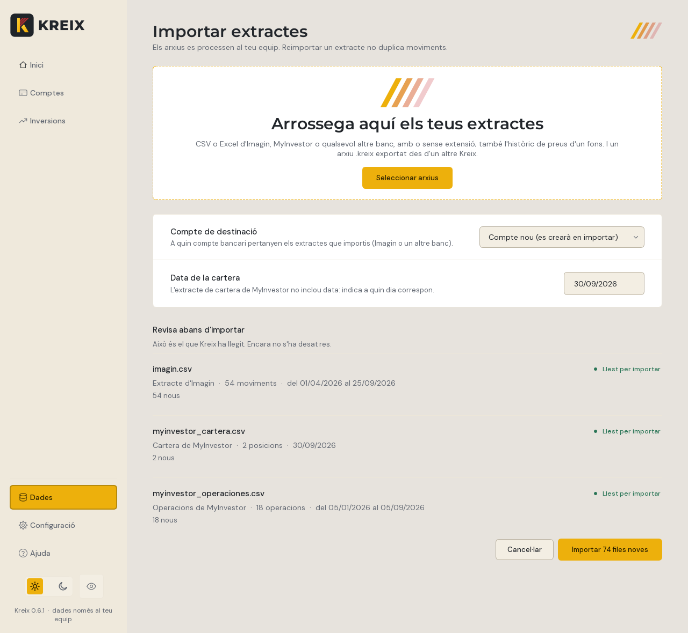
Vista prèvia de la importació: el que Kreix ha llegit, abans de desar res.
Quins arxius reconeix
Origen
Arxiu
Observacions
Imagin
Extracte de moviments
CSV o Excel
MyInvestor
Operacions i cartera
L'extracte de cartera no porta data: Kreix et pregunta a quin dia correspon.
CaixaBank
Extracte de moviments
Ingressos i despeses en columnes diferents. En proves.
Santander
Extracte de moviments
En proves.
Revolut
Extracte del compte (CSV)
En anglès o en castellà. Resta la comissió i només llegeix els moviments en euros. En proves.
Trade Republic
Transaccions (CSV)
Llegeix el compte d'efectiu; deixa fora les compres i vendes de borsa. En proves.
Qualsevol altre banc
Extracte de moviments
Un assistent et pregunta quina columna és cada cosa.
Històric de preus
CSV o Excel d'un fons
Una columna de data i una altra de preu, i opcionalment l'ISIN.
Admet CSV amb punt i coma, coma o tabulador, en UTF-8 o Windows-1252, i Excel (.xlsx i l'antic .xls, fins i tot el que alguns bancs desen com a taula web). Els imports en format espanyol (-2,99EUR, 1.234,56 €) es netegen sols. Un arxiu .kreix es restaura directament (capítol 8).
Si el teu banc no és a la llista
En deixar anar un arxiu que Kreix no reconeix apareix el botó Assigna les columnes. Un assistent t'ensenya les primeres files, proposa les columnes pels seus títols i tu les corregeixes:
La fila dels títols (se salta les línies de presentació que porten alguns Excel).
L'import: una columna amb signe, o dues d'ingressos i despeses; i si les despeses vénen com a nombres positius.
Els decimals (1.234,56 o 1,234.56) i l'ordre de la data (dia/mes/any o mes/dia/any).
El saldo, que és opcional; si el dones, Kreix comprova que encadena.
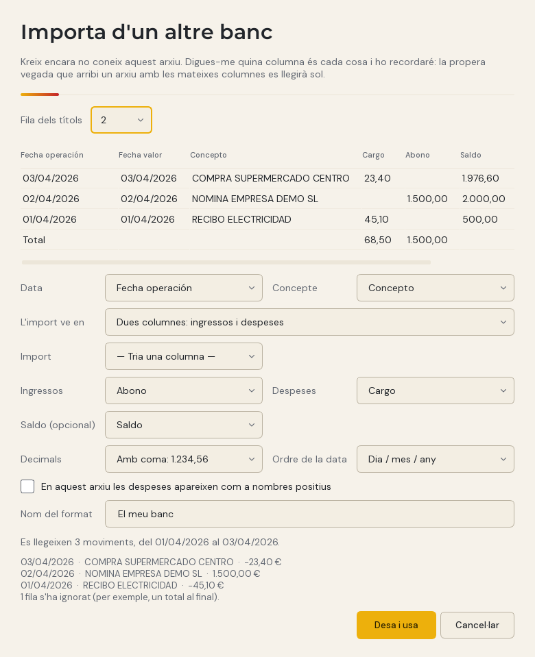
L'assistent per importar d'un altre banc.
Abans de desar veus quants moviments es llegeixen i els primers, per comprovar dates, imports i signes. El format queda desat amb el nom que li posis i s'aplica sol als arxius següents; a Importar > Bancs que ja conec es pot oblidar.
Duplicats i diversos comptes
Kreix mai no duplica moviments. Pots reimportar el mateix extracte, o diversos que se solapen. Dos pagaments idèntics el mateix dia es distingeixen pel saldo posterior.
A Importar tries el compte de destinació de cada extracte. El mateix extracte importat en dos comptes diferents no compta com a duplicat. La cartera d'inversió és una de sola.
Si un arxiu no es pot llegir, Kreix explica el motiu i què fer (per exemple, descarregar-lo un altre cop en CSV o Excel sense editar-lo).
Històric de preus d'un fons
Si has descarregat l'històric de preus d'un fons (del teu banc, Morningstar, Yahoo o Investing), deixa'l anar també a Importar. Kreix agafa l'ISIN d'una columna, del nom de l'arxiu o del selector Fons de l'històric. Amb ell, la gràfica de cada fons passa d'un punt al mes a punts de dies reals. El valor d'avui no canvia: continua manant el teu darrer extracte de cartera.
4
Recorregut pel programa
A dalt a l'esquerra hi ha les tres vistes de les teves dades: Inici, Comptes i Inversions. A baix, amb la seva icona, les eines: Dades (amb Importar i Exportar), Configuració i Ajuda, i a sota el commutador de mode clar i fosc i l'ull del mode privacitat.
Inici
La teva situació d'un cop d'ull. Et saluda segons l'hora amb el teu nom, el dia i l'hora, i la data de l'última actualització de dades (l'últim dia que vas importar alguna cosa).
Patrimoni net: tot el que tens, comptes més inversions, amb quant és liquiditat i quant inversió. Una línia en verd o vermell diu quant ha pujat o baixat respecte al tancament del mes anterior.
Rendiment global i taxa d'estalvi del mes.
Previsió a final de mes: quants diners tindràs l'últim dia del mes amb els teus pagaments fixos que queden, els teus ingressos fixos que encara falten (la nòmina) i la teva despesa de cada dia. És una estimació i l'Ajuda explica com es fa.
Pròxims pagaments: els teus pagaments recurrents que toquen les properes setmanes, per data.
Pressupostos del mes: passen sols d'un en un; els pots passar amb les fletxes, els punts o les tecles ← →.
Metes d'estalvi i Per classificar: els moviments sense categoria, amb una regla proposada si un comerç es repeteix.
Amb dades ja carregades, una llista de primers passos (importar el compte, les operacions, la cartera, definir un pressupost) que pots amagar.
Un Inici viu. Al costat de la salutació hi ha un cel animat que segueix l'hora real (sol de dia, lluna i estrelles de nit), amb Blitzen i Black, els gossos de l'autor. Es desactiva a Configuració > Cel animat i llum segons l'hora.
Comptes
Tot el dels teus comptes bancaris: saldo, ingressos, despeses, taxa d'estalvi, despesa mitjana, major despesa i categoria principal; despeses per categoria, evolució del saldo, ingressos i despeses per mes, pressupostos, pagaments recurrents i la taula de moviments.
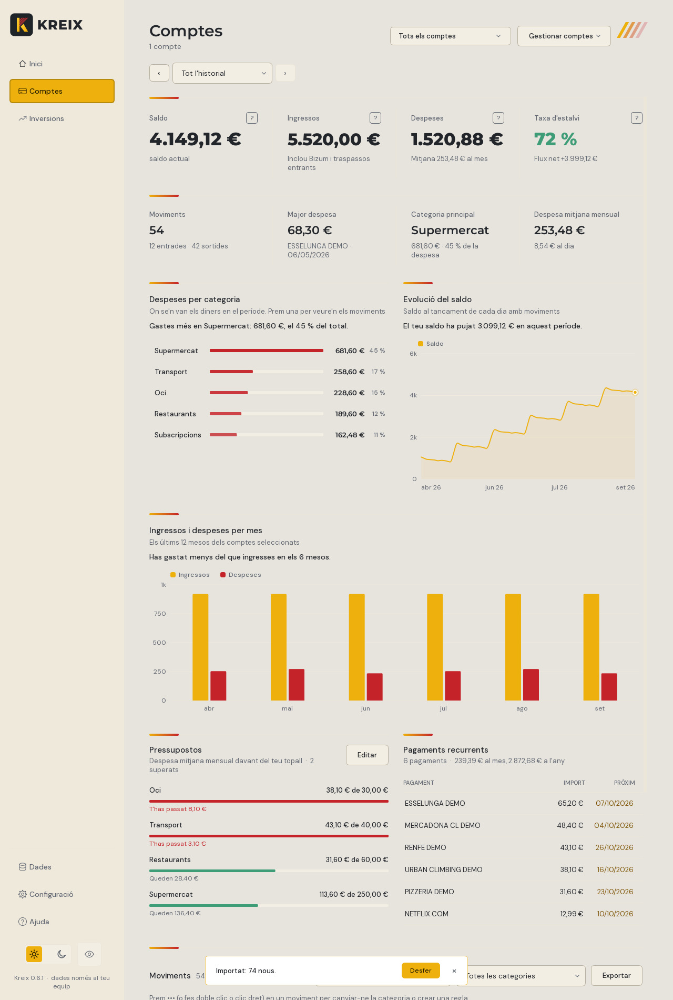
Comptes: mètriques, gràfics, pressupostos, recurrents i moviments.
Per mes o en global. El selector de dalt canvia entre Tot l'historial i cada mes amb dades (les fletxes salten al mes anterior o següent). En un mes, el saldo és el saldo al tancament i la mitjana de despesa passa de mensual a diària.
Diversos comptes. El selector té una casella per compte: marca els que vulguis combinar i tot es recalcula amb ells. Gestionar comptes permet afegir, canviar el nom i eliminar.
Inversions
Tot el de la teva cartera: valor, aportat, plusvàlua, rendibilitat (TWR i TIR), distribució per fons, aportat davant de valor, evolució de cada fons, posicions actuals i operacions.
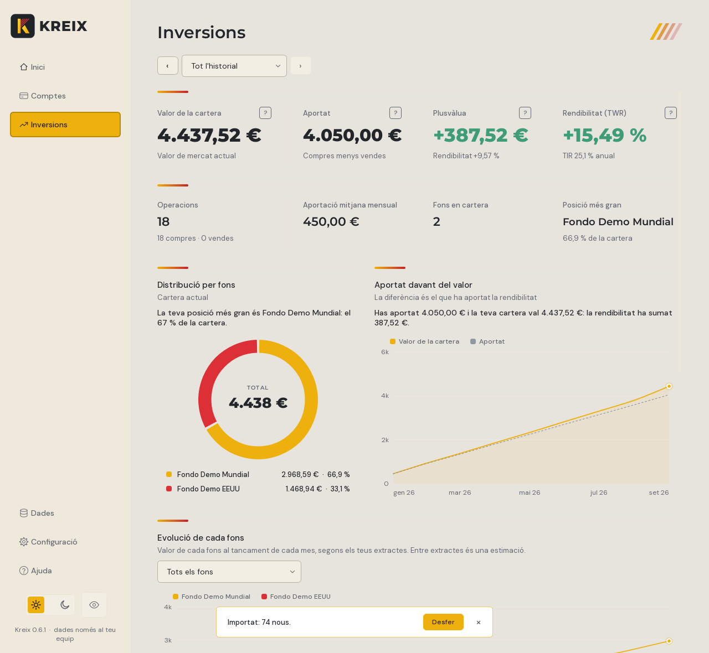
Inversions: valor, rendibilitat, repartiment per fons i operacions.
La targeta Evolució de cada fons dibuixa una línia per fons amb el seu valor al tancament de cada mes (o, si en tries un, el seu valor davant de l'aportat). És una estimació: Kreix reconstrueix les participacions que tenies amb les teves operacions i les multiplica per un preu interpolat entre els valors liquidatius que coneix. Com més extractes de cartera importis, més fidel és la corba. Amb un mes triat veus el valor estimat al tancament, l'aportat durant el mes, la variació sense comptar aportacions i la rendibilitat del mes.
Dades: Importar i Exportar
Importar s'explica al capítol 3. Exportar desa totes les teves dades en un únic arxiu .kreix per fer-ne una còpia o portar-les a un altre equip, i des d'allà es passen al mòbil (capítol 8).
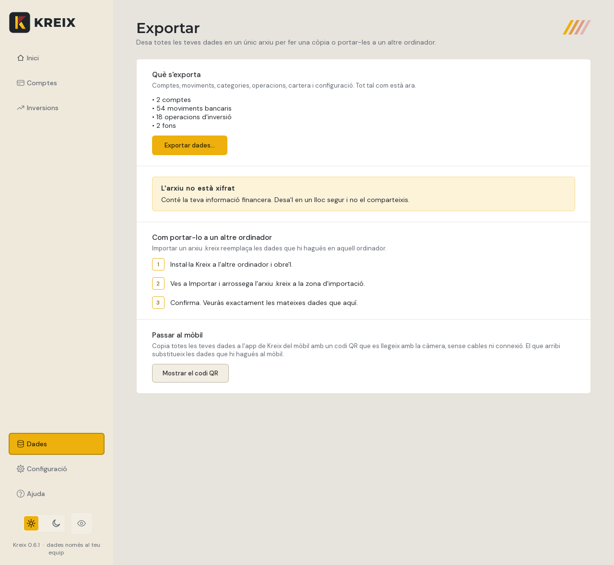
Exportar: l'arxiu .kreix i «Passar al mòbil».
Configuració
Organitzats en targetes per tema. Cada interruptor s'aplica a l'instant:
El teu nom, Idioma i El que t'interessa. L'idioma canvia tota l'aplicació (menús, ajuda, avisos, dates i números) sense perdre el teu lloc. En anglès els números s'escriuen 1,234.56; en castellà i català, 1.234,56. Si desactives comptes o inversions, les seves pestanyes continuen allà i les pots reactivar des de la mateixa pestanya.
Mida del text (normal, gran o molt gran) per a tota l'aplicació.
Cel animat i llum segons l'hora.
Comptar Bizum com a ingressos i despeses i Comptar traspassos entrants com a ingressos: afecten el càlcul de la taxa d'estalvi (capítol 6).
Regles de categories. Les teves regles manen sobre les que porta Kreix (capítol 5).
Seguretat (canviar la contrasenya, bloqueig automàtic, bloquejar ara) i Còpies de seguretat (carpeta, quantes conservar, restaurar): capítol 7.
Les teves dades: on es desen i Esborrar totes les dades (deixa la base buida i conserva la configuració). Quant a: la versió i les novetats.
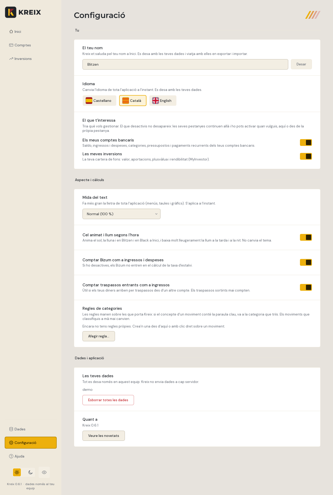
Configuració: el teu nom, idioma, el que t'interessa, aspecte, regles i les teves dades.
Ajuda
Un glossari per a qui no sap de finances, en sis temes: Els teus diners d'un cop d'ull, Els teus comptes bancaris, Les teves inversions, Rendibilitat, Avisos i Usar Kreix. Cada terme es desplega en prémer-lo, amb com el calcula Kreix, un exemple, un avís (Atenció) i un consell (Què fer). Al costat de les xifres principals hi ha un «?» que obre la seva explicació ja desplegada. El cercador Ctrl+K també troba pàgines, accions, moviments i termes de l'ajuda.
5
Els teus moviments, pressupostos i metes
La taula de moviments
A Comptes, els moviments van del més recent al més antic i, dins d'un mateix dia, en el seu ordre real (es reconstrueix amb la cadena de saldos). Pots cercar per concepte, filtrar per categoria i ordenar prement qualsevol capçalera. Amb diversos comptes apareix una columna Compte. Prémer una categoria al gràfic de despeses, o un pressupost, filtra la taula amb aquests moviments.
Cada moviment té un botó ••• (també doble clic o clic dret) per canviar-ne la categoria, crear una regla o copiar el concepte. El botó Exportar de la taula desa en CSV (UTF-8, separat per punt i coma, coma decimal) o Excel les files que es veuen, amb el filtre i l'ordre actuals. No exporta a PDF.
Categories al teu gust
Kreix categoritza les teves despeses amb regles per paraules clau (sou, supermercat, subscripcions, oci, restaurants, transport, habitatge, salut, Bizum…), amb un diccionari ampli de comerços i rebuts habituals. Tu mans:
Canviar categoria d'un moviment: la teva elecció no la trepitja cap regla. Tornar a la categoria automàtica la torna a Kreix.
Crear regla per a «…» porta a una categoria tots els conceptes amb aquesta paraula, també els que importis després. Es gestionen a Configuració > Regles de categories.
Per classificar. Inici compta els moviments sense categoria i, si un comerç es repeteix, proposa una regla per classificar-los d'un clic.
Pressupostos
A Comptes, el panell Pressupostos (botó Definir pressupostos) fixa un topall mensual per categoria. La barra es posa verda mentre et sobra, groga en passar del 85 % i vermella en superar-lo. Amb un mes triat compara la despesa d'aquest mes; amb tot l'historial, la despesa mitjana mensual. Inici avisa dels que estàs a punt de superar o ja has superat.
Pagaments recurrents
Kreix detecta les teves subscripcions i rebuts mensuals, et diu quant sumen al mes i a l'any i quan toca el següent. Un càrrec compta com a recurrent si es repeteix almenys tres mesos seguits, cada uns 30 dies i amb un import estable (fins a un 20 % de diferència). Si deixa d'aparèixer durant un mes i mig es dona per cancel·lat. El supermercat no hi entra (varia d'import i es repeteix més d'una vegada al mes) i els traspassos, Bizum i ingressos mai no compten.
Tu decideixes. Amb ••• (o clic dret) sobre una despesa, Marcar «…» com a pagament recurrent l'afegeix encara que Kreix no el detecti (amb un sol càrrec val; un d'anual compta un dotzè al mes). «…» no és un pagament recurrent el treu si Kreix s'ha equivocat. Els marcats per tu porten «marcat per tu» i es poden desmarcar.
Metes d'estalvi
A Inici, el panell Metes d'estalvi mostra una barra per meta. Gestionar metes permet crear, editar i eliminar metes (per exemple, «1.000 € per a vacances») i apuntar estalvi. Kreix no mou diners: només porta el compte. Si hi poses data, et diu quant caldria apartar al mes per arribar a temps.
Traspassos entre els teus comptes
Una sortida i una entrada del mateix import en dos comptes teus s'aparellen i no compten com a despesa ni com a ingrés. Els traspassos que entren compten com a ingrés i els que surten són neutres, tret que ho canviïs a Configuració.
Avisos del que no quadra
En lloc d'importar en silenci, Kreix avisa de saldos amb buits, d'una cartera que no coincideix amb les operacions o d'imports incoherents.
6
Entendre les xifres
Xifra
Què és i com es calcula
Patrimoni net
Saldo dels teus comptes més el valor de mercat de l'última foto de cartera de cada fons. Inici mostra quant és liquiditat i quant inversió, i quin percentatge és cada part.
Rendiment global
(valor de mercat − capital invertit) ÷ capital invertit, segons l'extracte de cartera.
Taxa d'estalvi
(ingressos − despeses) ÷ ingressos del mes. Pot ser negativa.
TIR
Taxa interna de retorn anualitzada amb dates irregulars (XIRR, base 365 dies). Té en compte quan vas aportar cada euro.
TWR
Rendibilitat ponderada en el temps: encadena els trams entre aportacions, així que el moment en què aportes no l'afecta.
Què compta com a ingrés o despesa
Els traspassos entre comptes propis que entren compten com a ingrés; els que surten són neutres. És una opció a Configuració.
Els Bizum compten com a ingrés o despesa. També és una opció a Configuració.
Les aportacions a MyInvestor no són despesa: es calculen a partir de les compres de MyInvestor, per no comptar-les dues vegades.
Quant refiar-te de la TIR i el TWR
Es reconstrueixen des de l'historial d'operacions. Si falta alguna operació, la cartera no quadra amb elles: Kreix t'ho avisa i amaga la TIR i el TWR fins que es corregeixi, en lloc d'ensenyar xifres enganyoses. Per evitar-ho, exporta del teu banc l'historial complet des de l'inici.
Les estimacions es diuen estimacions. La previsió a final de mes i el valor dels fons al tancament de cada mes són càlculs aproximats. L'Ajuda explica com es fa cadascun.
El mode privacitat
L'ull de la barra lateral (o Ctrl+H) difumina totes les quantitats en euros, també en gràfics i taules: es veu que hi ha una xifra, mai quina. La xifra real ni arriba a la pantalla, així que és segur per compartir pantalla o treballar en públic.
Com llegir cada gràfic
Sota cada gràfic hi ha una frase que diu el que compta («El teu saldo ha pujat 3.099,12 € en aquest període»). Llegeix-la primer: resumeix el que el gràfic vol dir.
7
Seguretat i còpies
Les teves dades mai no es desen en clar. Amb la contrasenya mestra, les dades es xifren al teu equip i només es desxifren en memòria mentre Kreix és obert. El que hi ha al disc és un únic arxiu xifrat, kreix.krx, a %APPDATA%\Kreix.
Què fa Kreix per tu
Xifrat: la clau es deriva de la teva contrasenya amb PBKDF2-HMAC-SHA256 (600 000 voltes i una sal aleatòria) i les dades es xifren amb Fernet (AES amb autenticació). Una contrasenya incorrecta o un arxiu alterat es rebutgen.
En memòria: en desbloquejar, la base es desxifra directament a la RAM, sense arxius temporals en clar. Kreix desa l'arxiu xifrat uns segons després de cada canvi i en tancar, amb escriptura atòmica i una còpia .bak també xifrada.
Sense xarxa: no hi ha comptes, servidors ni telemetria.
Canviar la contrasenya
Configuració > Seguretat la canvia comprovant l'actual. Les dades es tornen a xifrar amb una clau i una sal noves, i les còpies de seguretat també es tornen a xifrar amb la nova perquè cap no continuï obrint-se amb la vella.
Bloqueig automàtic
Kreix amaga tot i torna a demanar la contrasenya:
després d'uns minuts sense tocar l'equip (1, 2, 5, 10, 15 o 30; o mai),
en minimitzar la finestra,
quan Windows es bloqueja (Win+L) o l'equip se suspèn (cadascun es pot apagar).
Ctrl+L o Configuració > Seguretat > Bloqueja ara el bloqueja a l'instant. A partir del tercer error seguit cal esperar 5, 10, 20 i, com a màxim, 30 segons abans de tornar-ho a provar.
Còpies de seguretat automàtiques
Kreix fa una còpia xifrada (Kreix-copia-AAAA-MM-DD_HH-MM.kreix) en obrir si encara no n'hi ha cap, després de desar canvis (com a màxim una per hora i mai si no hi ha res de nou) i en tancar.
Es desen a la carpeta que triïs a Configuració > Còpies de seguretat (per defecte, al costat de les dades) i es conserven les últimes 3, 5, 10 o 20.
A baix a l'esquerra veus quan es va fer l'última. Comprova l'última còpia l'obre de debò i diu quants moviments i comptes té.
Es restauren des de la mateixa pantalla escrivint la contrasenya mestra.
Còpia fora de l'equip. Les còpies es desen per defecte al costat de les teves dades. Per estar a recer d'una avaria del disc, tria una carpeta en una altra unitat o en un núvol que ja facis servir: l'arxiu està xifrat.
Si oblides la contrasenya
No hi ha manera de recuperar les dades. A la pantalla de bloqueig, He oblidat la contrasenya esborra l'arxiu xifrat (després de demanar confirmació) per començar de zero amb una contrasenya nova i tornar a importar els teus extractes. Per això les còpies i la contrasenya apuntada en un lloc segur són tan importants.
El que no està xifrat
Un arxiu .kreix exportat sense marcar la casella de xifrat, i l'arxiu que importes mentre Kreix el valida. Tracta'ls com a dades sensibles: contenen la teva informació financera.
8
Portar les teves dades d'un lloc a un altre
L'arxiu .kreix
Dades > Exportar crea un arxiu .kreix (un ZIP amb una còpia consistent de la base de dades i una fitxa amb la versió i els totals). Serveix per fer una còpia o per portar les teves dades a un altre ordinador.
La casella Xifrar l'arxiu amb la meva contrasenya mestra està activa per defecte. En importar-lo, en aquest o en un altre ordinador, Kreix demana la contrasenya amb què es va exportar.
Si no el xifres, l'arxiu no està xifrat. Desa'l en un lloc segur i no el comparteixis.
S'exporta tot: comptes, moviments, categories, operacions, cartera i configuració (també el teu nom i el teu idioma), inclosa la protecció anti-duplicats.
Passar les dades a un altre ordinador
A l'ordinador d'origen, Dades > Exportar i desa l'arxiu .kreix.
A l'altre ordinador, instal·la Kreix, ves a Importar i arrossega l'arxiu.
Les dades queden idèntiques a les d'origen.
Importar un .kreix reemplaça les dades que hi hagués en aquest equip (demana confirmació si ja n'hi havia). Un arxiu rebut es tracta com a no fiable: només s'accepten les seves dues entrades, es comprova la integritat de la base de dades i es rebutja si porta disparadors o vistes, si és d'una versió més recent o si és massa gran.
Passar les dades al mòbil amb un codi QR
És la manera de portar les teves dades de l'ordinador a l'app del mòbil sense cables ni connexió. Primer instal·la l'app al mòbil (capítol 9). Després:
A l'ordinador, obre Dades > Exportar > Passar al mòbil. Apareix un codi QR que va canviant (uns sis codis per segon).
Al mòbil, obre l'app, ves a Dades i prem Escanejar el codi QR.
Apunta la càmera a la pantalla de l'ordinador, sense moure-la, fins que la barra de progrés arribi al 100 %. No cal que comenci enlloc concret: l'app va ajuntant els trossos.
Què es transfereix. Totes les dades, amb el mateix format que l'arxiu .kreix. El que rebis substituirà les dades que hi hagi al mòbil. La primera vegada, el mòbil et demanarà permís per fer servir la càmera.
9
Kreix al mòbil
L'app del mòbil és una aplicació web (PWA) que executa la mateixa lògica que el programa de Windows, amb la interfície adaptada al mòbil. S'instal·la des del navegador, funciona sense connexió i desa tot xifrat al mòbil amb el mateix format que l'ordinador. Diu exactament el mateix que el programa: mateixes xifres, mateixos gràfics, mateixes explicacions.
Instal·lar-la a Android
Obre Kreix a Chrome des del mateix mòbil (dasuarezang.github.io/kreix-web/app/). La primera vegada descarrega uns 20 MB; després funciona sense connexió.
Obre el menú: els tres punts (⋮), a dalt a la dreta.
Toca «Instal·lar aplicació». Si no la veus, toca «Afegir a la pantalla d'inici» i després «Instal·lar»: fan el mateix.
Confirma amb «Instal·lar». Sense botiga d'apps i sense compte.
Obre-la des de la pantalla d'inici. S'obre a pantalla completa, com qualsevol altra app.
A Samsung Internet els passos són: menú de les tres ratlles (≡), a baix a la dreta → «Afegir pàgina a» → «Pantalla d'inici» → «Afegir». A Edge són gairebé iguals que a Chrome.
Instal·lar-la a iPhone i iPad
Obre Kreix a Safari. Si l'enllaç s'obre dins d'una altra app (WhatsApp, Instagram…), copia'l i enganxa'l a Safari.
Toca Compartir: el quadrat amb una fletxa cap amunt (a baix a l'iPhone, a dalt a la dreta a l'iPad).
Baixa i toca «Afegir a la pantalla d'inici». La llista és llarga: llisca-la fins a veure l'opció amb un quadrat i un «+».
Deixa «Kreix» com a nom i toca «Afegir», a dalt a la dreta.
Obre-la des de la icona, no des de Safari: així es veu a pantalla completa.
La primera arrencada al mòbil
Funciona igual que a l'ordinador: crees una contrasenya mestra (amb el mateix mesurador), tries idioma, nom i el que vols gestionar, i pots provar amb dades d'exemple.
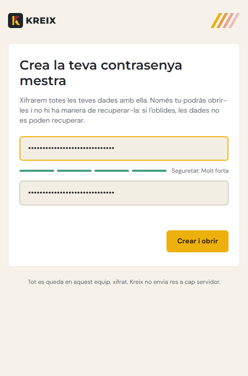
Contrasenya mestra
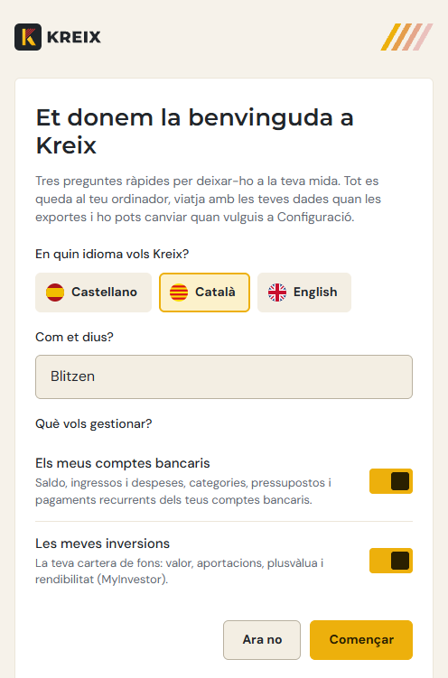
Benvinguda
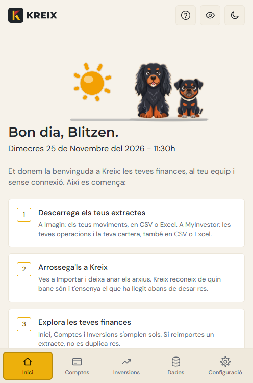
Primera pantalla
Les pantalles
A baix hi ha una barra amb cinc pestanyes: Inici, Comptes, Inversions, Dades i Configuració. A dalt, tres botons: l'Ajuda («?»), el mode privacitat (l'ull) i el canvi de tema clar o fosc.
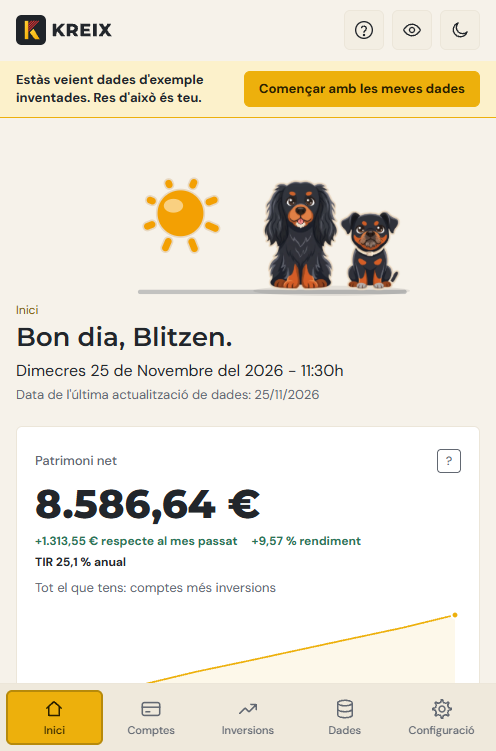
Inici
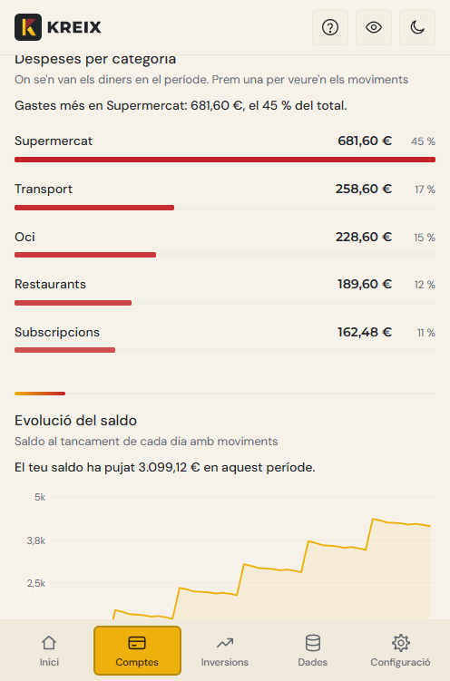
Comptes
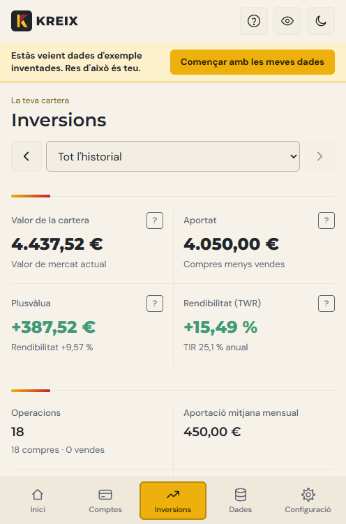
Inversions
Inici, Comptes i Inversions mostren el mateix que el programa de Windows, amb les targetes apilades. Els moviments tenen el seu menú per canviar la categoria o crear regles, i pots definir pressupostos i metes.
Ajuda: el mateix glossari que a l'ordinador.
Dades: importar, rebre i exportar
A la pestanya Dades pots Triar fitxers (extractes CSV o Excel, o un arxiu .kreix) de les carpetes Baixades o Arxius del mòbil, amb la mateixa vista prèvia «Revisa abans d'importar» que a l'ordinador. A sota, Escanejar el codi QR rep les dades de l'ordinador i Exportar dades… desa un arxiu .kreix (xifrat si deixes marcada la casella).
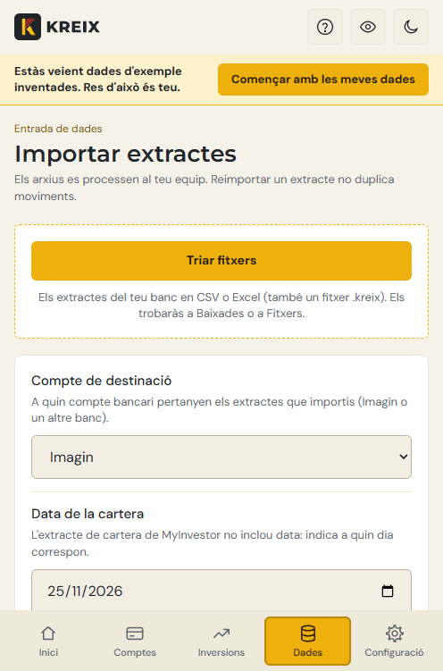
Importar extractes
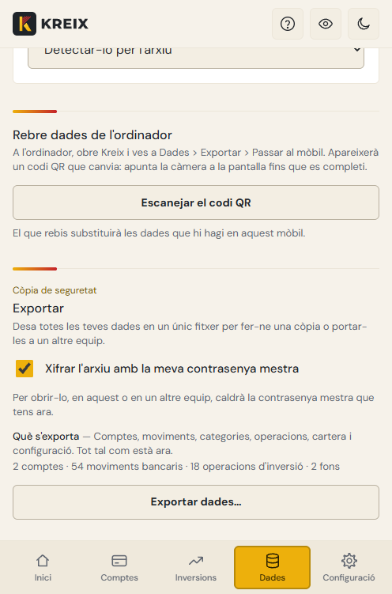
Rebre de l'ordinador i exportar
Configuració i seguretat al mòbil
Aquí hi ha l'idioma, el nom, el que t'interessa, la mida del text, el cel animat i les opcions de Bizum i traspassos, igual que a l'ordinador, i les regles de categories.
Seguretat:Canviar contrasenya mestra… i Bloqueja ara.
Bloqueig automàtic: si no fas servir Kreix durant uns minuts, amaga les teves dades i torna a demanar la contrasenya. Tu tries quant temps.
Bloquejar en sortir de l'app: en canviar d'app o apagar la pantalla, Kreix torna a demanar la contrasenya abans de mostrar les teves dades.
Còpies de seguretat: al mòbil es fan a mà des de Dades > Exportar: desa l'arxiu .kreix al teu núvol o envia-te'l. Kreix desa a més la versió anterior de les teves dades, xifrada, per si alguna cosa falla en desar.
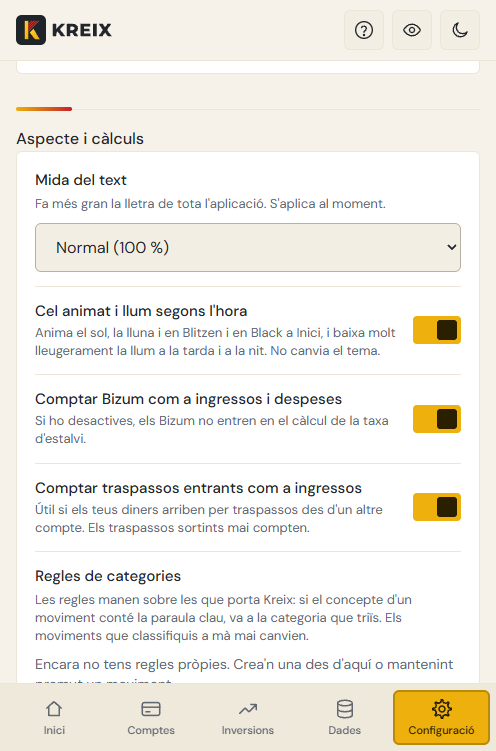
Aspecte i càlculs
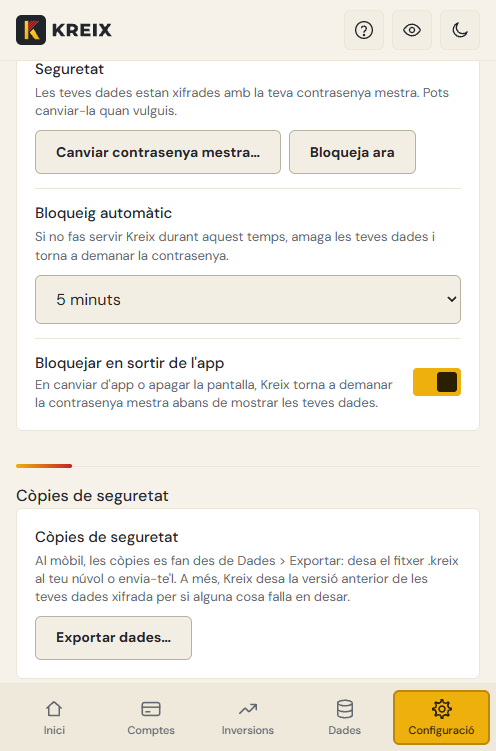
Seguretat i còpies
Diferències amb el programa de Windows
Programa de Windows
App del mòbil
Pensat per importar i organitzar amb calma, amb dreceres de teclat.
Pensada per consultar i per importar extractes descarregats al mateix mòbil.
Desa les dades a %APPDATA%\Kreix i fa còpies de seguretat automàtiques.
Desa les dades xifrades dins del navegador del mòbil. Les còpies es fan a mà, exportant un .kreix de tant en tant.
Genera el codi QR per passar les dades.
Llegeix el codi QR amb la càmera.
S'instal·la amb un instal·lador de Windows.
S'instal·la des del navegador, sense botiga d'apps.
Compte en esborrar dades del navegador. Les dades de l'app viuen a l'emmagatzematge del navegador. Si esborres les dades del lloc o desinstal·les el navegador, es perden. Desa de tant en tant un arxiu .kreix exportat, o torna a passar les dades des de l'ordinador.
En un Mac o en Linux pots fer servir aquesta mateixa app des del navegador, ja que el programa amb instal·lador és només per a Windows.
10
Dreceres i petits trucs
Dreceres de teclat (programa de Windows)
Ctrl + H
Amaga o mostra les quantitats (mode privacitat).
Ctrl + 1 … 7
Canvien de pàgina, en aquest ordre: Inici, Comptes, Inversions, Importar, Exportar, Configuració, Ajuda.
Ctrl + K
Ho cerca tot: pàgines, accions, moviments i explicacions de l'ajuda.
Ctrl + T
Alterna el mode clar i fosc.
Ctrl + F
Va al cercador de moviments.
Ctrl + L
Bloqueja Kreix a l'instant.
F5
Recalcula la pàgina.
←→
Passen els pressupostos del mes a Inici.
Petits trucs
Cada «?» té la seva explicació. Prem el «?» al costat d'una xifra per veure'n la definició i com la calcula Kreix.
Desfer és només l'últim canvi. Si vols revertir alguna cosa, fes-ho just després, mentre l'avís continua a la vista.
Reimporta sense por. Per afegir un mes nou, descarrega l'extracte complet i deixa'l anar: només s'afegeix el que és nou.
Mida del text. Si llegeixes amb dificultat, Configuració > Mida del text ho fa més gran a tota l'aplicació.
Mode fosc o clar. El commutador del sol i la lluna és sota el menú lateral (al mòbil, a dalt a la dreta).
Provar sense risc. «Provar amb dades d'exemple» et deixa explorar sense importar res, i desapareix sol en importar les teves dades.
Fins a desenes de milers de files. Els moviments s'ordenen, filtren i carreguen en una fracció de segon, i la finestra recorda la seva mida i l'última pàgina.
11
Problemes habituals
Windows m'avisa en obrir l'instal·lador.
És perquè l'instal·lador encara no està signat. Prem Més informació i després Executa de totes maneres.
Kreix no reconeix el meu extracte.
Prem Assigna les columnes i digues-li quina columna és la data, el concepte i l'import. Si l'arxiu és un PDF, descarrega'l en CSV o Excel: Kreix no importa PDF.
L'arxiu no es pot llegir.
Descarrega'l un altre cop, en CSV o Excel i sense obrir-lo ni editar-lo abans en una altra aplicació. Kreix explica el motiu a la mateixa targeta.
Els imports surten amb el signe canviat.
A l'assistent de columnes, indica que les despeses vénen com a nombres positius (o corregeix el signe de l'import) i comprova la vista prèvia abans de desar.
M'he equivocat en importar.
Prem Desfer a l'avís que apareix just després. Si ja ha passat l'avís, Configuració > Esborrar totes les dades deixa la base buida (la configuració es conserva) per començar de nou.
La TIR i el TWR no apareixen.
Kreix els amaga quan la cartera no quadra amb les operacions (en falta alguna). Importa l'historial complet d'operacions des de l'inici.
Un moviment és a la categoria equivocada.
Amb ••• (o clic dret) tria Canviar categoria, o crea una regla perquè passi sempre.
He oblidat la contrasenya.
No es pot recuperar. A la pantalla de bloqueig, He oblidat la contrasenya esborra l'arxiu xifrat per començar de zero amb una de nova.
El codi QR no es completa al mòbil.
Acosta el mòbil sense moure'l, puja la brillantor de la pantalla de l'ordinador, evita reflexos i comprova que el navegador té permís de càmera a la configuració del mòbil.
L'app del mòbil no s'instal·la o no apareix l'opció.
Fes servir Chrome (Android) o Safari (iPhone). A l'iPhone, si l'enllaç s'ha obert des d'una altra app, copia'l i obre'l directament a Safari.
Les dades del mòbil han desaparegut.
Es desen al navegador: si s'esborren les dades del lloc, es perden. Torna a passar-les des de l'ordinador amb el codi QR o importa el teu darrer .kreix.
12
Glossari
Patrimoni net
Tot el que tens: el saldo dels teus comptes més el valor de la teva cartera d'inversió.
Liquiditat
Els diners disponibles als teus comptes, els que pots fer servir a l'instant.
Taxa d'estalvi
Quina part del que ingresses al mes no te la gastes: (ingressos − despeses) ÷ ingressos.
Valor liquidatiu
El preu d'una participació d'un fons en un dia concret.
Participació
Cada «tros» d'un fons d'inversió. La teva inversió val participacions × valor liquidatiu.
Plusvàlua
El guany (o pèrdua) d'una inversió: el que val ara menys el que hi vas posar.
Rendiment
La plusvàlua en percentatge sobre l'invertit.
TWR
Rendibilitat que no depèn de quan aportes: encadena els trams entre aportacions.
TIR
Rendibilitat anualitzada que sí que té en compte quan vas aportar cada quantitat.
ISIN
El codi internacional de 12 caràcters que identifica un fons.
Pagament recurrent
Un càrrec que es repeteix cada mes amb un import semblant: subscripcions, rebuts.
Traspàs
Moure diners entre dos comptes teus. No és una despesa ni un ingrés.
Regla de categoria
«Si el concepte conté aquesta paraula, va a aquesta categoria». Les teves manen sobre les de Kreix.
Contrasenya mestra
La contrasenya amb què es xifren les teves dades. No es pot recuperar.
Arxiu .kreix
Un únic arxiu amb totes les teves dades, per a còpies i per portar-les a un altre equip.
PWA
L'app del mòbil: una aplicació web que s'instal·la des del navegador i funciona sense connexió.
Hi ha alguna cosa que no queda clara?
L'Ajuda de Kreix explica cada xifra amb exemples, i el web té la guia en línia i les preguntes freqüents: dasuarezang.github.io/kreix-web
 Kreix
Kreix